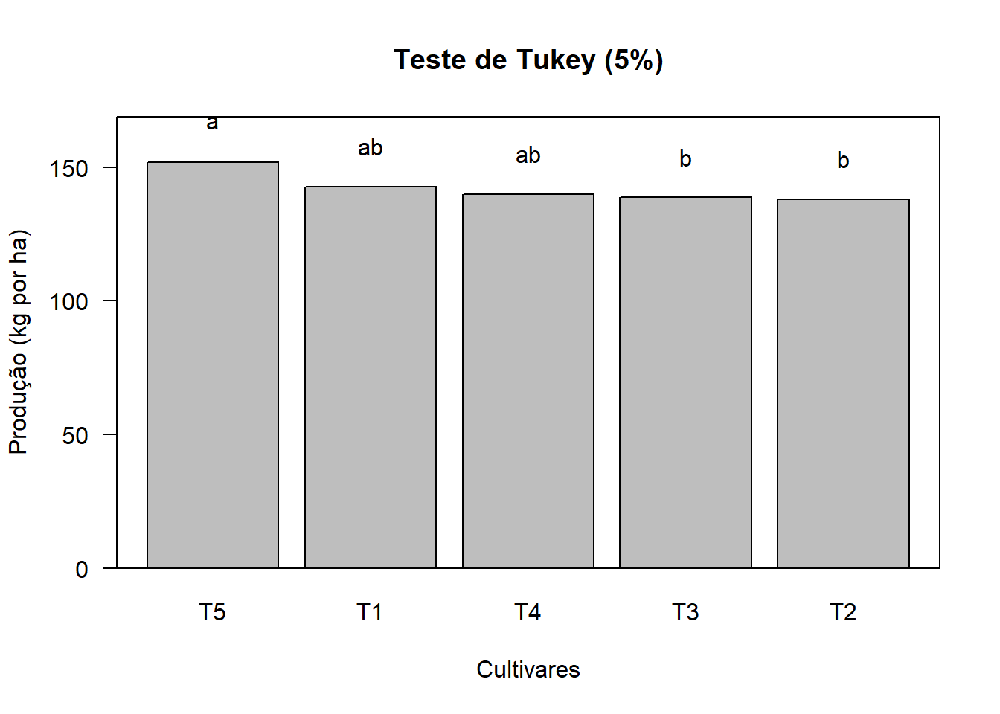

Capítulo 9 DELINEAMENTO EM BLOCOS CASUALIZADOS COM UMA PARCELA PERDIDA
9.1 Introdução
O Delineamento em blocos casualizados é balanceado de tal forma que todos os blocos possuem todos os tratamentos. Assim, se ocorrer uma perda de parcela, há uma quebra neste balanceamento, pois se, por exemplo, perdermos a parcela \(x_{ij}\) o tratamento \(i\) não conterá o efeito do bloco \(j\). Essa quebra de balaceamento leva a sérias complicações no método de análise de variância.
Um método de facilitar a análise consiste em obter uma estimativa da parcela perdida. Esta estimativa não representa o valor que seria obtido, pois ningém pode saber qua seria este valor, mas é um artifício de cálculo bastante simple que conduz ao mesmo resultado que se chegaria, por processos mais complexos, considerando apenas os dados realmente obtidos (blocos incompletos).
9.2 Estimativa da parcela perdida
| Blocos | |||||||
|---|---|---|---|---|---|---|---|
| Tratamentos | 1 | 2 | … | \(j\) | … | \(J\) | Total |
| 1 | \(x_{11}\) | \(x_{12}\) | … | \(x_{1j}\) | … | \(x_{1J}\) | \(T_1\) |
| 2 | \(x_{21}\) | \(x_{22}\) | … | \(x_{2j}\) | … | \(x_{2J}\) | \(T_2\) |
| … | … | … | |||||
| \(i\) | \(x_{i1}\) | \(x_{i2}\) | … | \(x_{ij} = NA\) | … | \(x_{iJ}\) | \(T+x_{ij}\) |
| … | … | … | |||||
| \(I\) | \(x_{I1}\) | \(x_{I2}\) | … | \(x_{Ij}\) | … | \(x_{IJ}\) | \(T_I\) |
| Total | \(B_1\) | \(B_2\) | … | \(B+x_{ij}\) | … | \(B_J\) | \(G'+x_{ij}\) |
- NA = é a parcela perdida
De acordo com o modelo matemático, temos:
\[ x_{ij}= \mu+\tau_{i}+\beta_{j}+\epsilon_{ij} \]
A estimativa da parcela perdida é obtida tornando mínimo o efeito dos fatores não contralados ou acaso na parcela.
Então, utilizando o método dos quadrados mínimos, obtém-se:
\[ x_{ij} = \frac{IT+JB-G'}{(I-1)(J-1)} \]
onde
\(I\) é o número de tratamentos do experimento.
\(J\) é o número de blocos do experimento.
\(T\) é a soma das parcelas existentes no tratamento que perdeu a parcela.
\(B\) é a soma das parcelas existentes no bloco que perdeu a parcela.
\(G'\) é a soma das parcelas existentes no experimento.
9.3 Obtenção da análise de variância
Uma vez obtida a estimativa da parcela perdida, substituímos o seu valor no quadro de dados, e calculamos as somas de quadrados da maneira usual. Então, com o valor estimado da parcela perdidada obtemos:
\(T_{i}=T+x_{ij}\)
\(B_{j}=B+x_{ij}\)
\(G=G'+x_{ij}\)
\(C=\frac{G^2}{IJ}\)
\(SQ_{Total}=\sum_{i=1}^I\sum_{j=1}^Jx_{ij}^2-C\)
\(SQ_{Trat}=\frac{1}{J}\sum_{i=1}^IT_{i}^2-C\)
\(SQ_{Blocos}=\frac{1}{I}\sum_{j=1}^JB_{j}^2-C\)
\(SQ_{Res}=SQ_{Total}-SQ_{Trat}-SQ_{Blocos}\)
O método dos mínimos quadrados torna mínima a soma de quadrados do resíduo, a qual fica corretamente estimada, porém, causa uma superestimação na soma de quadrados de tratamentos e de blocos.
Então, a soma de quadrados de tratamentos deve ser ajustada. Para isso, devemos calcular o fator de correção, representado por \(U\), e dado por:
\[ U=F.C. =\frac{I-1}{I}\left(x_{ij}-\frac{B}{I-1}\right)^2 \]
Onde:
\(x_{ij}\) é a estimativa da parcela perdida.
\(I\) é o número de tratamentos do experimento.
\(B\) é a soma dos parcelas existentes no bloco que perdeu a parcela.
E a soma de quadrados de tratamentos ajustada será:
\(SQ_{Trat(Aj.)}=SQ_{Trat}-U\)
Embora, na pratica não seja necessário, caso haja interesse, pode-se também, fazer a correção da soma de quadrado de blocos por meio da expressão:
\(SQ_{Blocos(Aj.)}=SQ_{Blocos}-U_B\)
Onde:
\[ U_B=\frac{J-1}{J}\left(x_{ij}-\frac{T}{J-1}\right)^2 \]
A seguir montamos o quadro de análise de variância, lembrando que há uma perda de um grau de liberdade para o total e para o resíduo, devido à estimativa da parcela perdida.
Então, o quadro de análise de variância será:
| Causas de Variação | GL | SQ | QM | F |
|---|---|---|---|---|
| Tratamentos (Ajust.) | \(I-1\) | \(SQ_{Trat}-U\) | \(SQ_{Trat(Aj.)}\)/(I-1) | \(QM_{Trat}\)/\(QM_{Res}\) |
| Blocos | \(J-1\) | \(SQ_{Blocos}-U_B\) | \(SQ_{Blocos}\)/(J-1) | \(QM_{Blocos}\)/\(QM_{Res}\) |
| Resíduo | \((I-1)(J-1)-1\) | \(SQ_{Res}\) | \(SQ_{Res}\)/[(I-1)(J-1)-1] | |
| Total | \(IJ-2\) | – |
Os valores de F calculados são comparados com os valores de F tabelados para se verificar se o teste é significativo ou não.
9.4 Médias de tratamentos
As médias de tratamentos são obtidas de maneiral usual, ou seja:
\(\hat{m}_k=\frac{T_k}{J}\) para os tratamentos que não perderam parcela.
\(\hat{m}_i=\frac{T+x_{ij}}{J}\) para o tratamento que perdeu a parcela.
9.5 Erros padrões das médias
a) Para as médias dos tratamentos que não perderam parcela.
\[ s(\hat{m})=\frac{s}{\sqrt{J}}=\sqrt{\frac{QM_{Res}}{J}} \]
b) Para a média do tratamento que perdeu parcela.
\[ s(\hat{m})= \sqrt{\hat{V}(\hat{m})},\; onde \\ \hat{V}(\hat{m}) = \left[ \frac{1}{J}+\frac{I}{J(J-1)(I-1)} \right]s^2 \]
9.6 Comparação de médias pelo teste de Tukey
Temos dois casos a considerar;
a) Comparação entre médias dos tratamentos sem parcela perdida:
\[ \hat{Y} = \hat{m}_k-\hat{m}_{k'} \\ \hat{V}\hat{Y}=\frac{2}{J}s^2 \]
Então, para a aplicação do teste de Tukey, temos:
\[ \Delta = dms=q\sqrt{\frac{1}{2}\cdot\frac{2}{J}s^2}=q\frac{s}{\sqrt{J}} \]
b) Comparações entre as médias dos tratamentos sem parcela perdida \((k)\) com média do tratamento que perdeu parcela \((i)\):
\[ \hat{Y} = \hat{m}_k-\hat{m}_{i} \\ \hat{V}(\hat{Y})=\left[\frac{2}{J}+\frac{I}{J(I-1)(J-1)} \right]s^2 \]
então, para a aplicação do teste de Tukey, temos:
\[ \Delta = dms = q\sqrt{\frac{1}{2}\hat{V}(\hat{Y})} \]
9.7 Exemplo de aplicação
Para exemplificar a análise de variância de um experimento em blocos casualizados com parcela perdida, vamos analisar os dados obtidos pelo trabalho intitulado “Estudos dos Efeitos do Promalin sobre frutos de macieiras (Malus spp) cultivares Brasil e Rainha”, realizado por MESTRINER (1980). Foram utiizados 5 tratamentos:
\(T_1\) - 12.5 ppm de promalin em plena floração
\(T_2\) - 25.0 ppm de promalin em plena floração
\(T_3\) - 50.0 ppm de promalin em plena floração
\(T_4\) - 12.5 ppm de promalin em plena floração + 12.5 ppm de promalin no início da frutificação
\(T_5\) - Testemunha
Os resultados obtidos para peso médio de frutos da macieira, em gramas, foram os seguintes, e podem ser encontrados online em macieira.
| Tratamentos | Bloco1 | Bloco2 | Bloco3 | Bloco4 | Total |
|---|---|---|---|---|---|
| T1 | 142.36 | 144.78 | 145.19 | 138.88 | 571.21 |
| T2 | 139.28 | 137.77 | 144.44 | 130.61 | 552.10 |
| T3 | 140.73 | 134.06 | 136.07 | 144.11 | 554.97 |
| T4 | 150.88 | 135.83 | 136.97 | 136.36 | 560.04 |
| T5 | 153.49 | NA | 151.75 | 150.22 | 455.46 |
| Total | 726.74 | 552.44 | 714.42 | 700.18 | 2693.78 |
Em vermelho descamos o tratamento e o bloco que perderam a parcela.
As hipóteses que desejamos testar são: \[ \begin{cases} H_0:\;As\;doses\;de\;Promalin\;não\;influenciam\;no\;peso\;médio\;de\;frutos\;de\;macieira\\ H_1: \;As\;doses\;de\;Promalin\;possuem\;efeitos \;diferentes\;sobre\;o\;peso\;médio\;de\;frutos\;de\;macieira \end{cases} \]
a) estimativa da parcela perdida
\[ x_{ij} = \frac{IT+JB-G'}{(I-1)(J-1)} x_{52} = \frac{5\cdot455,46+4\cdot552,44-2693,78}{(5-1)(4-1)} = 149,44\;g \]
A seguir, colocamos esse valor no quado de dados, e recalculamos os totais:
\(T_{5}=T+x_{52}=455,46+149,44=604,90\)
\(B_{2}=B+x_{52}=552,44+149,44=701,88\)
\(G=G'+x_{52}=2693,78+149,44=2843,22\)
| Tratamentos | Bloco1 | Bloco2 | Bloco3 | Bloco4 | Total |
|---|---|---|---|---|---|
| T1 | 142.36 | 144.78 | 145.19 | 138.88 | 571.21 |
| T2 | 139.28 | 137.77 | 144.44 | 130.61 | 552.10 |
| T3 | 140.73 | 134.06 | 136.07 | 144.11 | 554.97 |
| T4 | 150.88 | 135.83 | 136.97 | 136.36 | 560.04 |
| T5 | 153.49 | 149.44 | 151.75 | 150.22 | 604.90 |
| Total | 726.74 | 701.88 | 714.42 | 700.18 | 2843.22 |
b) Cálculo das somas de Quadrados
b.1) Soma de Quadrados Total: $$ SQ_{Total}={i=1}^I{j=1}Jx_{ij}2-C \
SQ_{Total}=[142.362++149.442++150.22^2]-=816,5390 $$
b.2) Soma de Quadrados de Tratamentos: \[ SQ_{Trat}=\frac{1}{J}\sum_{i=1}^IT_{i}^2-C \\ SQ_{Trat}=\frac{1}{4}[571,21^2+\cdots+604,9^2]-\frac{2843,22^2}{5\cdot4}=463,9483 \]
b.3) Soma de Quadrados de Blocos: \[ SQ_{Blocos}=\frac{1}{I}\sum_{j=1}^JB_{j}^2-C \\ SQ_{Blocos}=\frac{1}{5}[726,74^2+701,88^2+714,42^2+700,18^2]-\frac{2843,22^2}{5\cdot4}=91,9078 \]
b.4) Soma de Quadrados de Resíduos:
\[ SQ_{Res}=SQ_{total}-SQ_{Trat}-SQ_{Blocos} \\ SQ_{Res}=816,5390-463,9483-91,9078=260,6829 \]
c) Correção da soma de quadrados de tratamentos:
\[ U=\frac{I-1}{I}\left(x_{ij}-\frac{B}{I-1}\right)^2 \\ U=\frac{5-1}{I}\left(149,44-\frac{552,44}{5-1}\right)^2=102,6951 \]
Portanto, temos:
\(SQ_{Trat(Aj.)}=SQ_{Trat}-U=463,9483-102,6951=361,2532\)
Então podemos montar o seguinte quadro de análise de variância:
| Causas de Variação | GL | SQ | QM | F |
|---|---|---|---|---|
| Tratamento | 4 | 361,2532 | 90,3133 | 3,81* |
| Blocos | 3 | 91,9078 | 30,6359 | 1,29ns |
| Resíduo | 11 | 260,6829 | 23,6984 | – |
| Total | 18 | – | – | – |
Valores de F da tabela para tratamentos (4 x 11 GL):\(\begin{cases} 5\%=3,36 \\ 1\%=5,67 \end{cases}\)
Valores de F da tabela para blocos (3 x 11 GL):\(\begin{cases} 5\%=3,81 \\ 1\%=6,22 \end{cases}\)
Conclusões: O teste F foi significativo ao nível de \(5\%\) de probabilidade, indicando que devemos rejeitar \(H_0\) e concluir que as doses de Promalin possuem efeitos diferentes sobre o peso médio dos frutos de maçã, com um grau de confiança superior a \(95\%\) de probabilidade.
Para tirar conclusões mais específicas sobre o comportamento dos inseticidas, podemos aplicar um teste de comparação de médias.
a) Cálculo das médias de tratamentos:
\[ \hat{m_1} = \frac{T_1}{J}=\frac{571,21}{4}=142,80\;g\\ \hat{m_2} = \frac{T_2}{J}=\frac{552,10}{4}=138,03\;g\\ \hat{m_3} = \frac{T_3}{J}=\frac{554,97}{4}=138,74\;g\\ \hat{m_4} = \frac{T_4}{J}=\frac{560,04}{4}=140,01\;g\\ \hat{m_5} = \frac{T_5}{J}=\frac{604,90}{4}=151,23\;g\\ \]
b) Cálculo dos erros padrões das médias de tratamentos:
Para as médias dos tratamentos que não perderam parcela, temos:
\(s(\hat{m})=\sqrt{\frac{QM_{Res}}{J}}=\sqrt{\frac{23,6984}{4}}=2,43\;g,\;k=(1,2,3,4)\)
Para média do tratamento que perdeu a parcela, o erro padrão será:
\(s(\hat{m}_5)=\sqrt{\frac{1}{J}+\frac{I}{J(J-1)(I-1)}s^2}=\sqrt{\frac{1}{4}+\frac{5}{4(4-1)(5-1)}23,6984}=2,90\;g\)
c) Aplicação do teste de Tukey para comparação das médias de tratamentos:
c.1) Cálculo do valor de \(\Delta\) para comparações entre médias de tratamentos que não perderam parcela:
\(q_{(5\times11GLRes)} = 4,57, s=\sqrt{QM_{Res}}=4,8681\;\;\;\;\;\;\;\ r=4\)
Então, temos:
\[ \delta = dms = q\sqrt{\frac{QM_{Res}}{r}}=4,57\sqrt{\frac{23,6984}{4}}=11,12\;g \] c.2) Cálculo do \(\Delta\) para comparações entre médias dos tratamentos que não perderam parcela e a média do tratamento que perdeu a parcela \(\hat{m}_5\):
\[ \hat{Y} = \hat{m}_k-\hat{m}_{i} \\ \hat{V}(\hat{Y})=\left[\frac{2}{J}+\frac{I}{J(I-1)(J-1)} \right]s^2 \]
Então, temos:
\[ \Delta = dms =q\sqrt{\frac{1}{2}\hat{V}(\hat{Y})} \\ \Delta = dms =4,57\sqrt{\frac{1}{2}\left[\frac{2}{4}+\frac{5}{4(5-1)(4-1)} \right]23,6984^2}=12,23\;g \]
c.3) Cálculo das estimativas dos contrastes entre duas médias:
| \(\hat{m_1}\) | \(\hat{m_4}\) | \(\hat{m_3}\) | \(\hat{m_2}\) | |
|---|---|---|---|---|
| \(\hat{m_5}\) | 8,43 | 11,22 | 12,49* | 13,2* |
| \(\hat{m_1}\) | - | 2,79 | 4,06 | 4,77 |
| \(\hat{m_4}\) | - | - | 1,27 | 1,98 |
| \(\hat{m_3}\) | - | - | - | 0,71 |
Conclusão: Médias seguidas de pelo menos uma letra em comum não diferem entre si, pelo teste de Tukey, ao nível de 5% de probabilidade.
\[ \hat{m_5} = 151,23\;g\;\;\;\;-a\\ \hat{m_1} = 142,80\;g\;\;\;\;-ab\\ \hat{m_4} = 140,01\;g\;\;\;\;-ab\\ \hat{m_3} = 138,74\;g\;\;\;\;-b\\ \hat{m_2} = 138,03\;g\;\;\;\;-b \]
Portanto, a melhor dose 12,5 ppm de promalin aplicada em plena floração (Traramento 1) ou em plena floração e no início da frutificação (Tratamento 4) não afeta o peso médio dos frutos, pois não difere da testemunha.
d) Cálculo do coeficiente de variação do experimento:
\[ \hat{m}=\frac{G}{IJ}=\frac{2843,22}{5\cdot4}=142,16\;g\\ s=\sqrt{QM_{Res}}=\sqrt{23,6984}=4,8681\;g\\ CV=\frac{100\cdot s}{\hat{m}}=\frac{100\cdot4,8681}{142,16}=3,42\%. \]
Aplicação no R.

caminho<-"https://raw.githubusercontent.com/arpanosso/ExpAgr_2020/master/dados/macieira.txt"
dados<-read.table(caminho,h=TRUE)
# Extraindo os fatores e a variável resposta
trat<-as.factor(dados$trat)
bloco<-as.factor(dados$bloco)
y<-dados$y
B<-tapply(y,bloco,sum,na.rm=TRUE)[is.na(B<-tapply(y,bloco,sum))]
# Definindo o modelo para análise preliminar com a parcela perdida
modelo<-aov(y~trat+bloco)
anova(modelo)## Analysis of Variance Table
##
## Response: y
## Df Sum Sq Mean Sq F value Pr(>F)
## trat 4 412.42 103.106 4.3507 0.02369 *
## bloco 3 87.66 29.220 1.2330 0.34419
## Residuals 11 260.68 23.698
## ---
## Signif. codes: 0 '***' 0.001 '**' 0.01 '*' 0.05 '.' 0.1 ' ' 1# Estimando a parcela perdida
xij<-predict(modelo,newdata = dados$bloco<-as.factor(bloco))[is.na(y)]
# valor estimado
xij## 18
## 149.44# Substituindo a parcela perdida pelo valor estimado
y[is.na(y)]<-xij
# Definindo o novo modelo
modeloC<-aov(y~trat+bloco)
anava<-anova(modeloC)
# Calculando o fator de correção para o ajuste das soma de quadrados dos tratamentos
I<-length(levels(trat))
QMRes<-anava$`Mean Sq`[3]
(U<-(I-1)/(I)*(xij-B/(I-1))^2)## 18
## 102.6951anava$Df[3]<-anava$Df[3]-1
anava$`Sum Sq`[1]<-anava$`Sum Sq`[1]-U
anava$`Mean Sq`<-anava$`Sum Sq`/anava$Df
anava$`F value`[1]<-anava$`Mean Sq`[1]/anava$`Mean Sq`[3]
anava$`Pr(>F)`[1]<-pf(anava$`Pr(>F)`[1],anava$Df[1],anava$Df[3])
anava$`F value`[2]<-anava$`Mean Sq`[2]/anava$`Mean Sq`[3]
anava$`Pr(>F)`[2]<-pf(anava$`Pr(>F)`[2],anava$Df[2],anava$Df[3])
anava## Analysis of Variance Table
##
## Response: y
## Df Sum Sq Mean Sq F value Pr(>F)
## trat 4 361.25 90.313 3.8109 0.0002554 ***
## bloco 3 91.91 30.636 1.2927 0.1667326
## Residuals 11 260.68 23.698
## ---
## Signif. codes: 0 '***' 0.001 '**' 0.01 '*' 0.05 '.' 0.1 ' ' 1## Comparações múltiplas para as médias Tukey
require("agricolae")
tukey <- HSD.test(modelo,"trat", group=TRUE,console=TRUE)##
## Study: modelo ~ "trat"
##
## HSD Test for y
##
## Mean Square Error: 23.69846
##
## trat, means
##
## y std r Min Max
## T1 142.8025 2.897843 4 138.88 145.19
## T2 138.0250 5.708897 4 130.61 144.44
## T3 138.7425 4.539760 4 134.06 144.11
## T4 140.0100 7.261621 4 135.83 150.88
## T5 151.8200 1.636123 3 150.22 153.49
##
## Alpha: 0.05 ; DF Error: 11
## Critical Value of Studentized Range: 4.573596
##
## Groups according to probability of means differences and alpha level( 0.05 )
##
## Treatments with the same letter are not significantly different.
##
## y groups
## T5 151.8200 a
## T1 142.8025 ab
## T4 140.0100 ab
## T3 138.7425 b
## T2 138.0250 bbar.group(tukey$groups,
las=1,
ylim=c(0,max(y)*1.10),
xlab="Cultivares",
ylab="Produção (kg por ha)",
main="Teste de Tukey (5%)");box()
## [1] 3.42